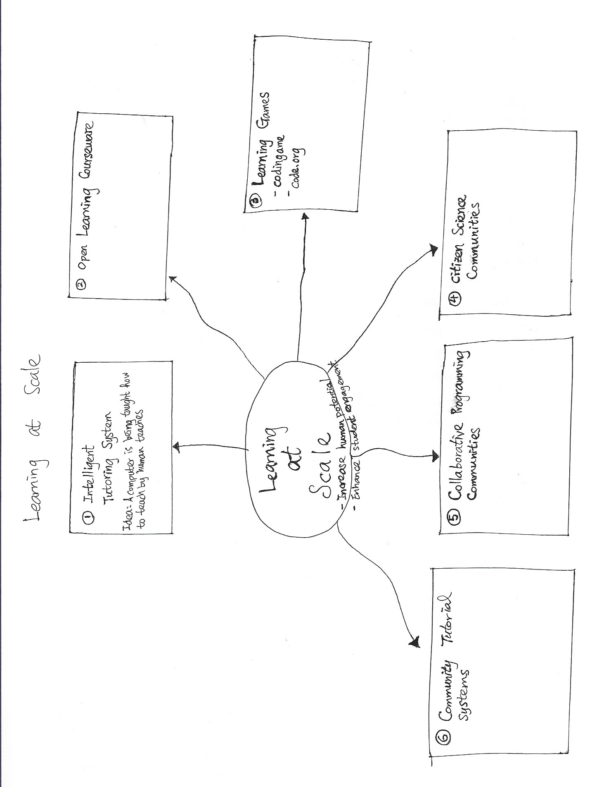

Learning at Scale - Future Education

(Ido Roll 2018) Ido defines learning at scale as the study of the technologies, pedagogies, analyses, and theories of learning and teaching that take place with a large number of learners and a high ratio of learners and facilitators.